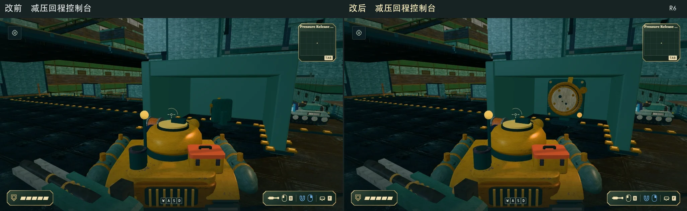
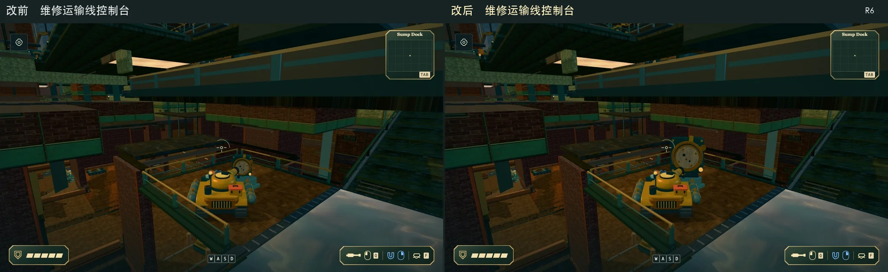
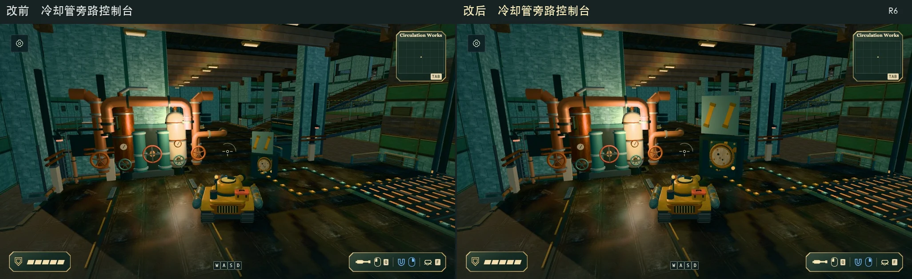
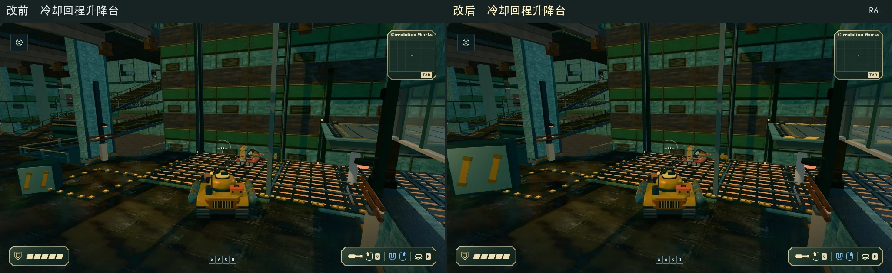
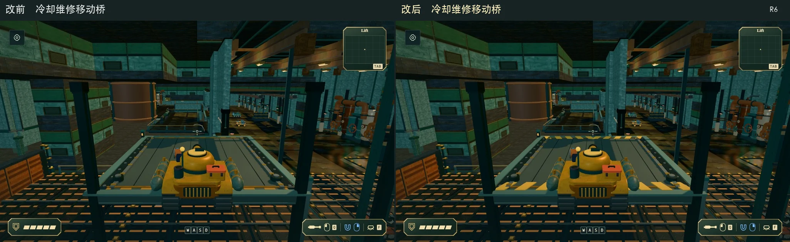
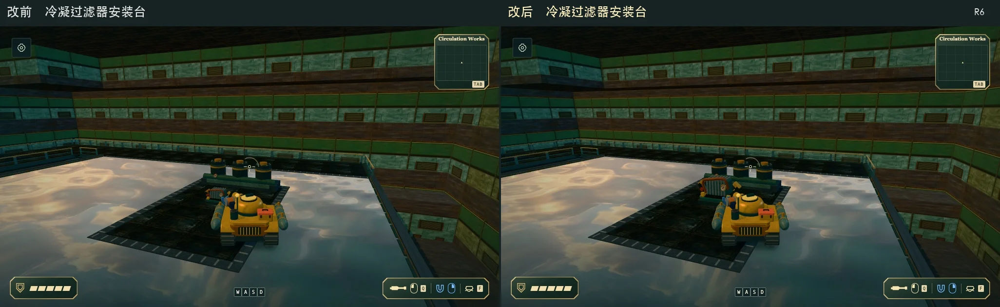
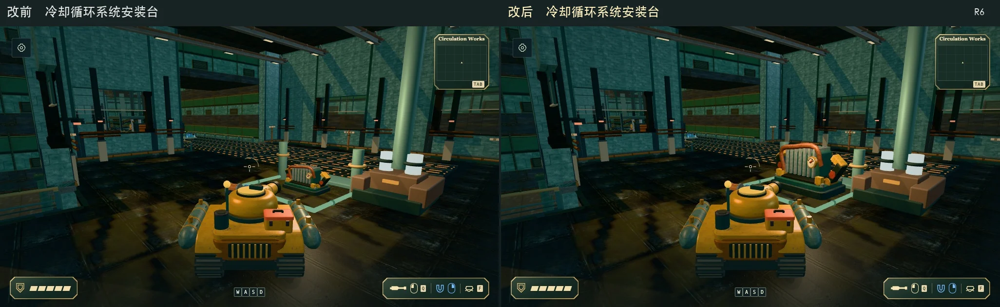

R6 循环工厂
7 组。同一辆坦克、同一位置、同一朝向与俯仰。左图为改前，右图为改后。点击对比图可查看两张完整的 1024 × 576 游戏画面。
机关
减压回程控制台 pressure-return
维修运输线控制台 maintenance
冷却管旁路控制台 coolant-bypass
登车与停层标记
冷却回程升降台 coolant-return-lift
冷却维修移动桥 coolant-maintenance-bridge
装备
冷凝过滤器安装台 cooling-filter
冷却循环系统安装台 circulation